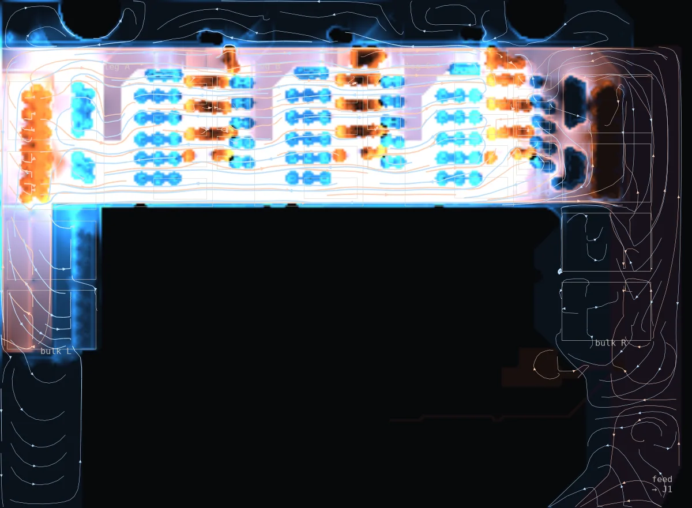
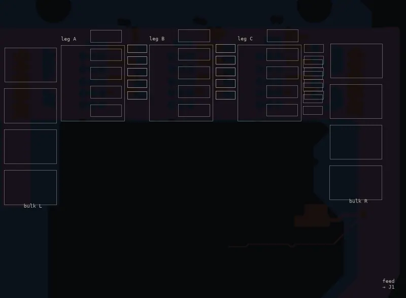
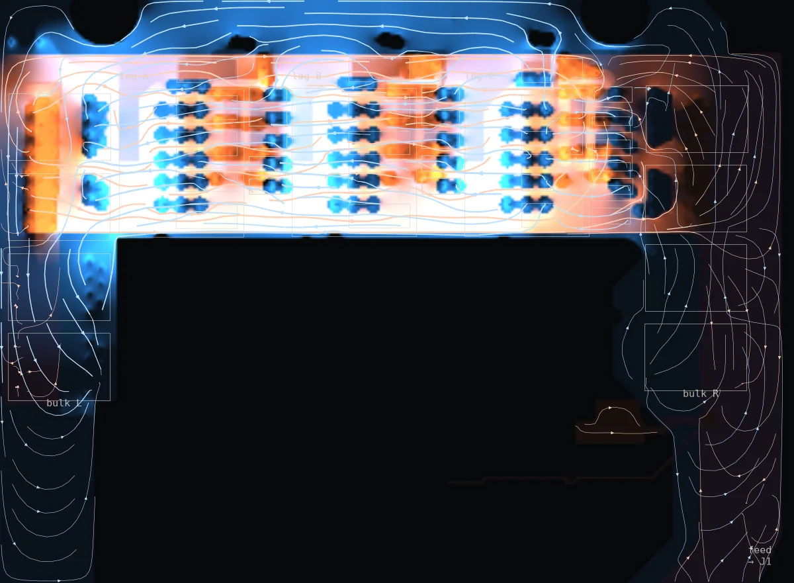
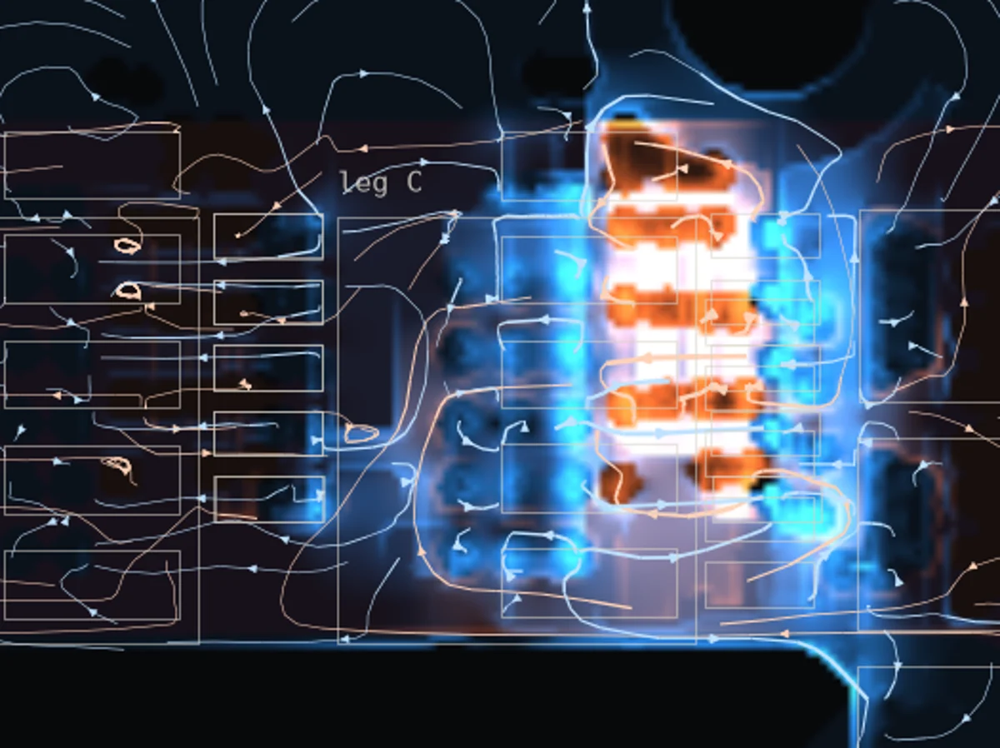
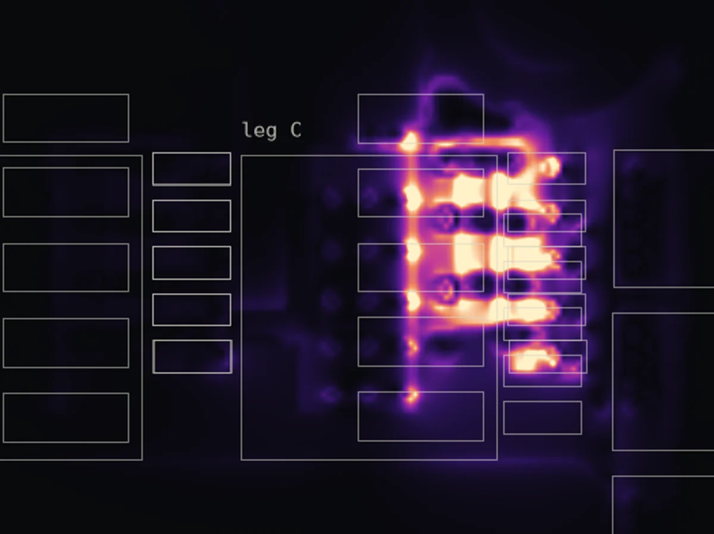
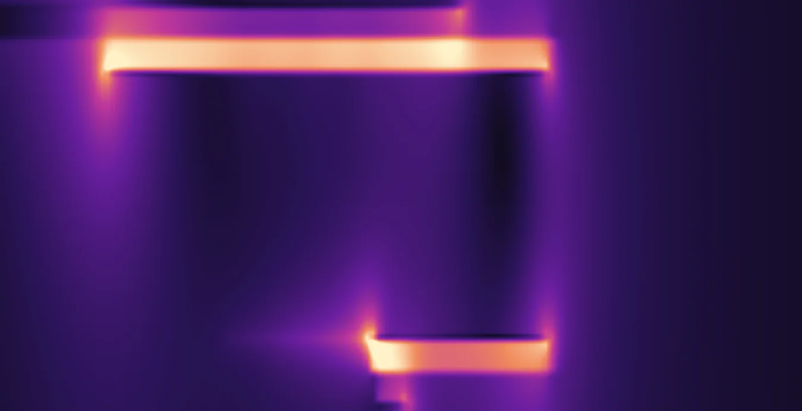
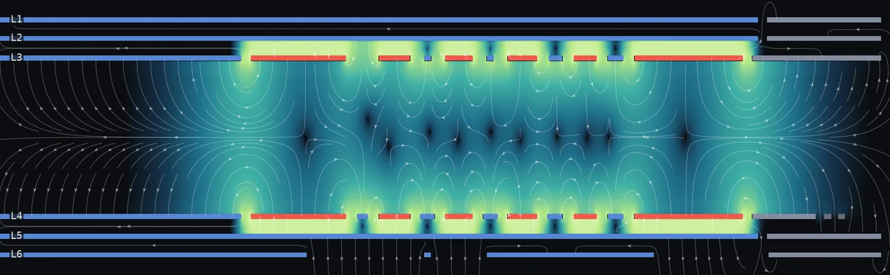
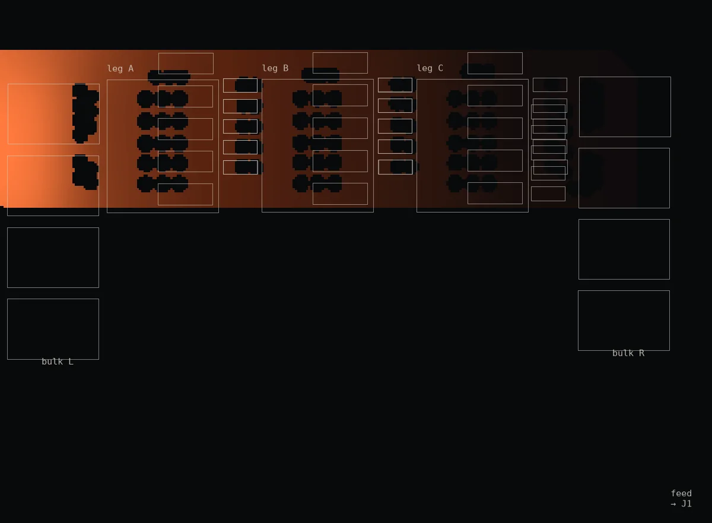

Inside the Rev8 Power Stage
Three LMG2100 GaN half-bridges switch an 8.4 V bus 96,000 times a second. Each edge moves 10 A in about a nanosecond. This page follows that current through the copper: which capacitors answer first, how the return current finds the path directly under the supply current, and what the fields look like while it happens.

Above: 1 A at 10 MHz from the left bulk capacitors to leg C, all six layers seen from the top. Warm is VBUS copper, cool is PGND copper; where the supply current and its return run directly over each other the two colors add to white. Brightness is log₁₀ of sheet current, 0.005–0.5 A/mm. Streamlines follow the current in each net.
One nanosecond, ten amps
Leg C (U12) at 8.4 V carrying 10 A out of SW. HI rises at t = 0; the LMG2100's 35 ns propagation delay puts the switching instant at about 39 ns. The high side takes the load current in 1.2 ns, overshoots to 19.6 A while it charges the low side's output capacitance, and rings at about 330 MHz: the commutation loop is the package (≈ 0.2 nH) plus 62–105 pH of board to the bottom 2.2 µF bank, against roughly 1 nF of Coss.
Xyce, LMG2100R044 model (EPC2090 dies, LMG1205-style driver), the leg's real gate-drive parts (2.7 Ω VCC and bootstrap resistors, 100 nF bootstrap, 22 Ω / 47 pF inputs), 10.4 ns dead time, on the 28-port PEEC model of the VBUS/PGND copper with Murata capacitor models at 8.4 V.
The capacitors hand the current outward
The device draws its 10 A from whatever is closest in inductance. For the first nanoseconds that is leg C's own banks under and over the device. Within about 100 ns the neighbouring legs' banks and the right bulk capacitors take over, by a microsecond the two bulk banks carry most of it, and the feed from J1 ramps up behind them. Each step outward has more capacitance and more inductance. The curves below are the current each group supplies into the VBUS copper after the switching instant.

The change in sheet current since 100 ns before the HI command, so only the edge's own current shows (the steady 5 A from J1 is subtracted). All six layers seen from the top, HS turn-on at 8.4 V and 10 A. Warm: VBUS copper; cool: PGND copper; white: supply and return current stacked over each other. Brightness: log₁₀ |ΔK| from 0.03 to 5 A/mm, fixed for every frame. Frames are 0.25 ns apart from 32 to 64 ns, then log-spaced to 5 µs. Strip: device current in A (blue) and VBUS at the feed (copper, plotted ÷10, so 10 on the scale is 100 mV) at each frame. Method under "How these pictures were made".
At DC the return spreads. At 10 MHz it lines up.
Same loop, two frequencies: 1 A from the left bulk bank to leg C. At DC the current divides by resistance, so the return uses every bit of PGND copper on every layer. Above about 1 MHz inductance decides, and the return current crowds into the PGND plane directly next to the VBUS band, because that path encloses the least magnetic flux. The VBUS band lives on L3 and L4, each 0.1 mm from its own PGND plane (L2 and L5): the stackup gives every supply layer an immediate return layer.

The tightest loop on the board
The commutation current at each edge closes through the five 2.2 µF 0402s right next to the LMG2100 on the bottom side. Board side, that loop is 62–105 pH at 10 MHz (62 pH with the device pads as ideal conductors, 105 pH with a copper slab across them); it sits on L6 over the PGND plane on L5, 0.092 mm away. The field of the loop stays in that thin gap.


The bus field lives in two thin gaps
Cut across the VBUS band at x = 98 mm with 1 A flowing from the left bulk to leg C. At 10 MHz the field is squeezed into the two 0.1 mm gaps between the VBUS layers and their PGND planes. Field energy per unit length is the band's inductance: 15 pH/mm here. At DC the return spreads and the field fills the board.


|B| from the PEEC current (exact cell-integrated 1/r kernel, FFT convolution), per amp of loop current, each image on its own scale (dark to pale). Board top is up; layers L1 (top) to L6 (bottom).
Where the field lines land
The electrostatic picture with VBUS held at 1 V and every other net at 0 V. In the VBUS band the field is confined between each VBUS layer and its PGND plane: 5–6 pF/mm of plane capacitance that helps the MLCCs at the highest frequencies. Under the analog sense bundle the traces sit 0.1 mm over a quiet AGND plane on L2, and the VBUS feed on L4 is a full millimetre of core away: each sense trace sees 7.4 fF/mm to VBUS, and only 4.6 % of the high-frequency VBUS swing appears on an open trace.


2D finite-volume Laplace solve with the dielectrics (εr 4.1 prepreg, 4.6 core), |E| in V/mm per volt of VBUS on a log scale from 0.01 to 30, with field lines. Vertical scale ×2.

Three timescales on one bus
What the VBUS feed under the analog bundle sees at every edge: a 330 MHz burst from the device loop that is gone in tens of nanoseconds, bus modes near 1.5 MHz as the banks hand the current outward, and the 96 kHz triangle as the bulk capacitors discharge and recharge against the pack.
| timescale | frequency | at the feed (8.4 V, 10 A) | what sets it |
|---|---|---|---|
| device-loop burst | 330–340 MHz | ≈ 110 mV peak, 1/e in 2–10 ns | package + 62–105 pH board loop against Coss; the bottom 0402s |
| bus modes | 1.4–1.5 MHz, plus 2.9, 6, 27 MHz | 3.3 mV at 0.1–0.3 µs, 1.3 mV at 0.6–1.2 µs | MLCC banks against bank-to-bulk copper (205–534 pH) |
| PWM ripple | 96 kHz | 116 mV peak to peak | 10 × 47 µF bulk (17.6 µF each at 8.4 V) against the pack |
Shielded where it counts
The current-sense traces run over the VBUS feed for 23–27 mm, but in this stackup a solid AGND plane sits 0.1 mm above them on L2 and the feed is a millimetre of core below. After the ADC's 69 ns sampling aperture the pickup on the sense nodes is a few hundredths of a millivolt, and the worst bound (the feed current's magnetic coupling into the trace loop) stays under 0.25 mV: about 2.5 mA of phase-current error, and only for samples within half a microsecond of an edge.
| sense node | raw peak | after 69 ns aperture | mechanism |
|---|---|---|---|
| VSNS | 1.6 mV | 0.04 mV | 0.19 pF to VBUS into 2.03 kΩ ∥ 13 pF |
| ISNS | — | 0.006–0.020 mV | same coupling into the INA296 output (20–100 Ω assumed) |
| feed-current EMF | 1.1–5.9 mV | 0.05–0.25 mV | feed current dI/dt × 0.2–0.9 pH/mm × 23–27 mm (bound) |
Method and limits
- Copper: PyPEEC 5.8, VBUS and PGND copper of the rev 8.1.1 KiCad file, 100 µm × 11.5 µm voxels, crop x 85.5–117.5, y 89.5–113 mm, about 710k voxels. 28 terminals: the three LMG2100s, eight capacitor banks, two probes on the feed, the feed cut at y = 113 mm. Solved at DC and 10 MHz with fields saved (AWS).
- Circuit: hub-referenced port impedances R(f) + jωL from the PEEC terminal matrix, Murata SimSurfing ladders for every capacitor at 8.4 V, the feed continued to J1 and C2/C27, the pack and harness as 50 mΩ + 100 nH. The device edge comes from Xyce on the same network; probe voltages and port currents are computed per harmonic of the 96 kHz period up to 1 GHz.
- Time-domain current density: J(r,t) = Σ ports I_p(t) · J_p(r), where J_p is the PEEC field for 1 A into port p. J_p is known at DC and at 10 MHz; each harmonic uses the blend (1−w)·J_p,DC + w·J_p,10MHz with w = f²/(f² + (1 MHz)²), the corner where ωL ≈ R for the bank and bulk loops. Above 10 MHz the 10 MHz distribution is used: it is already in the inductive limit at the plane level, but skin and proximity effects inside each 35 µm layer are not resolved.
- Fields: |B| from the PEEC current with an exact cell-integrated kernel. |E| from 2D cross-section solves with the dielectrics; the PEEC model itself is magnetoquasistatic and gives copper potentials, not fields in the dielectric.
- Limits: model results, no bench data. GND/AGND copper and the regulator input capacitors are not in the 3D model. The LMG2100R044 model is unofficial (package L ±50 %, DC-only package resistance, so the 330 MHz burst probably decays faster in hardware). One leg switches at a time.
- Files: sims/bus-ring/ (bus study, RESULTS.md) and sims/board-viz/ (these plots), branch worktree-bus-ring-sim.